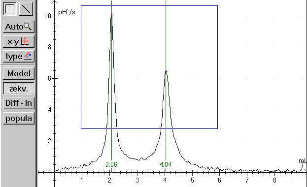
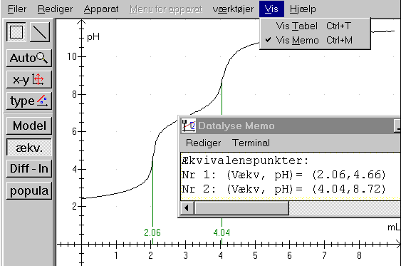
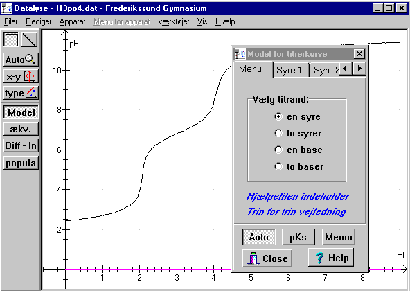
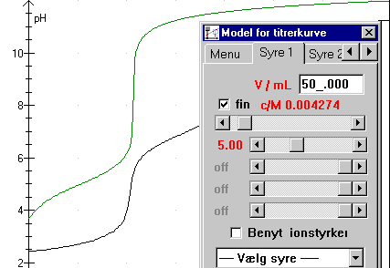
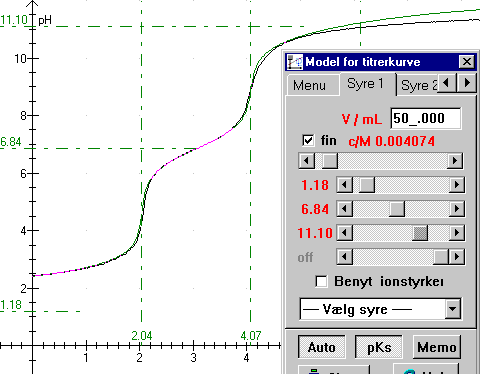

Til målingerne er anvendt DMI-24 multimeter fra IMPO. Der er kalibreret på buffer 4.01. (Kun én buffer anvendt, der burde være 2 eller 3.) Ved hjælp af en pumpe, er der tilført 0.00129 mL NaOH pr. sekund. Denne faktor er automatisk indlagt som X-akse faktor for x-aksen i Datalyse. Syrens volumen er 50,0 mL
Se vejledningen til øvelsen »Titrer« for nærmere oplysninger om forsøgets udførelse.

Panelet til venstre indeholder knapper til behandling af titrerkurver.
Diff – ln: Giver menu til valg af logaritmiske akser / differentieret graf. Her benyttes menuen til at differentiere og udglatte titrerkurven. Den udglattede og differentierede kurve bør have pæne symmetriske toppe uden hakker.
Ækvivalens: Beregner ækvivalenspunkter på den givne graf. Kan bruges i 1.g og naturfag.
Model: Giver en menu, som benyttes til at beregne en teoretisk titrerkurve, der kan sammenlignes med den eksperimentelle kurve.
Population: Overfører populationsdata beregnet i model til tabellen. Forståelse af modelberegningerne og populationsdata forudsætter højt niveau i kemi.
Ækvivalens:
Ækvivalenspunkterne kan bestemmes forholdsvis enkelt. Man henter opgaven og klikker på knappen »Ækv«. Det går imidlertid kun godt, hvis målingen er »pæn«. Er omrøringen lidt mangelfuld, eller har man målt for ofte, fås falske ækvivalensværdier.
Vælg derfor først »Diff – ln« og vælg differentiation og udglat fx med en faktor 5. Man kan desuden markere et område med musen, som vist på billedet. Gør man det, vil ækvivalenspunkter kun blive beregnet i dette område. I det aktuelle tilfælde kun for volumen større end 1 mL og mindre end 6 mL og pH større end 2.3.

Når ækvivalensværdierne er beregnet klikkes igen på »Diff – ln« og pH-kurven tegnes som vist ovenfor. Desuden er »Vis Memo« valgt. Memo er en lille tekstbehandler, hvor du kan skrive kommentarer til dit forsøg, og hvor Datalyse skriver resultatet af udregninger i programmet. Bemærk, at memoen akkumulerer, så måske skal du slette nogle data før udskrivning eller før du gemmer opgaven.
Model
Bemærk, at der er trin for trin vejledning i online hjælp!

Figur 1: En titrerkurve, opgave H3PO4.DAT

Figur 2: indtastning af volumen og koncentration:
I øverste felt indtastes syrens volumen i mL. Dernæst trækkes scrollbaren for koncentration til en passende værdi. (Når koncentrationen ændres forskydes det lodrette stykke af den teoretiske grønne graf sig i vandret retning, de lodrette stykker skal falde sammen).
Der er 4 scrollbarer for pks-værdier. For en monovalent syre skal man kun bruge den øverste. Her skal vi bruge 3, da H3PO4 er en triprot syre. Start med den øverste. Træk knappen til venstre indtil det første vandrette stykke af kurverne falder sammen.

Figur 3: Næsten færdigt fit.
Det ses tydeligt, at syren er trivalent. Knappen pKs er nede, derfor vises pKs-værdier og ækvivalens-værdier. Men desværre er målingen ikke særlig god! Prøv at vælge phosphorsyre i listboksen »vælg syre«. Pks-værdierne er 2.15/7.20/12.12.
Knappen Memo overfører alle relevante data til memoen. I memoen kan du skrive kommentarer til øvelsen og memoen kan udskrives sammen med grafen.
Population
Ovenstående populationsdiagram viser, at Datalyse kan samarbejde med Excel.
Phosphorsyre betegnes i modellen med H3A (triprot syre). I vandig opløsning forekommer syren på formerne H3A, H2A-, HA-2 og A-3. De relative mængder afhænger af pH i opløsningen. Datalyse beregner fordelingen i % af de forskellige populationer som funktion af pH.
Når man i Datalyse klikker på knappen population til venstre i panelet udregnes populationerne. Målt pH, beregnet pH og populationer overføres til tabellen. Populationerne beregnes vha. de beregnede pH-værdier.
Tabel til Excel: